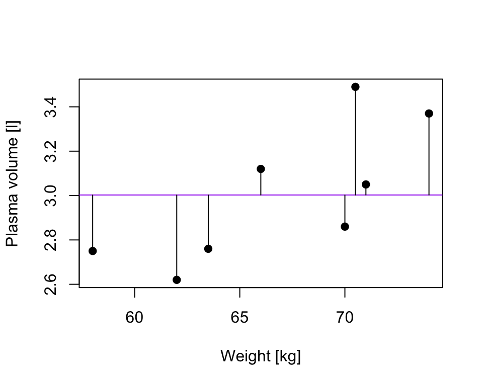

Chapter 10 Model assumptions
Aims
- to introduce concepts of linear models summary and assumptions
Learning outcomes
- to able to interpret R^2 and R^2(adj) values
- state the assumptions of a linear model and assess them using residual plots
10.1 Assessing model fit
- earlier we learned how to estimate parameters in a liner model using least squares
- now we will consider how to assess the goodness of fit of a model
- we do that by calculating the amount of variability in the response that is explained by the model
10.2 \(\mathbf{R^2}\): summary of the fitted model
considering a simple linear regression, the simplest model, Model 0, we could consider fitting is \[Y_i = \beta_0+ \epsilon_i\] that corresponds to a line that run through the data but lies parallel to the horizontal axis
in our plasma volume example that would correspond the mean value of plasma volume being predicted for any value of weight (in purple)

TSS, denoted Total corrected sum-of-squares is the residual sum-of-squares for Model 0 \[S(\hat{\beta_0}) = TSS = \sum_{i=1}^{n}(y_i - \bar{y})^2 = S_{yy}\] corresponding the to the sum of squared distances to the purple line 
Fitting Model 1 of the form \[Y_i = \beta_0 + \beta_1x + \epsilon_i\] we have earlier defined
RSS, the residual sum-of-squares as: \[RSS = \displaystyle \sum_{i=1}^{n}(y_i - \{\hat{\beta_0} + \hat{\beta}_1x_{1i} + \dots + \hat{\beta}_px_{pi}\}) = \sum_{i=1}^{n}(y_i - \hat{y_i})^2\]
that corresponds to the squared distances between the observed values \(y_i, \dots,y_n\) to fitted values \(\hat{y_1}, \dots \hat{y_n}\), i.e. distances to the red fitted line

Definition 10.1 A simple but useful measure of model fit is given by \[\mathbf{R}^2 = 1 - \frac{RSS}{TSS}\] where:
- RSS is the residual sum-of-squares for Model 1, the fitted model of interest
- TSS is the sum of squares of the null model
- R^2 quantifies how much of a drop in the residual sum-of-squares is accounted for by fitting the proposed model
- R^2 is also referred as coefficient of determination
- It is expressed on a scale, as a proportion (between 0 and 1) of the total variation in the data
- Values of R^2 approaching 1 indicate he model to be a good fit
- Values of R^2 less than 0.5 suggest that the model gives rather a poor fit to the data
10.3 R^2 and correlation coefficient
Theorem 10.1
In the case of simple linear regression:
Model 1: \(Y_i = \beta_0 + \beta_1x + \epsilon_i\) \[R^2 = r^2\] where:
- \(R^2\) is the coefficient of determination
- \(r^2\) is the sample correlation coefficient
10.4 R^2(adj)
- in the case of multiple linear regression, where there is more than one explanatory variable in the model
- we are using the adjusted version of R^2 to assess the model fit
- as the number of explanatory variables increase, \(R^2\) also increases
- \(R^2(adj)\) takes this into account, i.e. adjusts for the fact that there is more than one explanatory variable in the model
Exercises:
Researchers collected age, weight, height and 10 body circumference measurements for 252 men in an attempt to find an alternative way of calculate body fat as oppose to measuring someone’s weight and volume, the latter one by submerging in a water tank. Is it possible to predict body fat using easy-to-record measurements?
Use lm() function and fit a linear method to model “brozek” score estimate of percent body fat - find R^2 and and R^2(adj) -
data(fat, package = "faraway")
head(fat)## brozek siri density age weight height adipos free neck chest abdom hip
## 1 12.6 12.3 1.0708 23 154.25 67.75 23.7 134.9 36.2 93.1 85.2 94.5
## 2 6.9 6.1 1.0853 22 173.25 72.25 23.4 161.3 38.5 93.6 83.0 98.7
## 3 24.6 25.3 1.0414 22 154.00 66.25 24.7 116.0 34.0 95.8 87.9 99.2
## 4 10.9 10.4 1.0751 26 184.75 72.25 24.9 164.7 37.4 101.8 86.4 101.2
## 5 27.8 28.7 1.0340 24 184.25 71.25 25.6 133.1 34.4 97.3 100.0 101.9
## 6 20.6 20.9 1.0502 24 210.25 74.75 26.5 167.0 39.0 104.5 94.4 107.8
## thigh knee ankle biceps forearm wrist
## 1 59.0 37.3 21.9 32.0 27.4 17.1
## 2 58.7 37.3 23.4 30.5 28.9 18.2
## 3 59.6 38.9 24.0 28.8 25.2 16.6
## 4 60.1 37.3 22.8 32.4 29.4 18.2
## 5 63.2 42.2 24.0 32.2 27.7 17.7
## 6 66.0 42.0 25.6 35.7 30.6 18.8model.all <- lm(brozek ~ age + weight + height + neck + abdom + hip + thigh + knee + ankle + biceps + forearm + wrist, data = fat)
print(summary(model.all))##
## Call:
## lm(formula = brozek ~ age + weight + height + neck + abdom +
## hip + thigh + knee + ankle + biceps + forearm + wrist, data = fat)
##
## Residuals:
## Min 1Q Median 3Q Max
## -10.2664 -2.5658 -0.0798 2.8976 9.3204
##
## Coefficients:
## Estimate Std. Error t value Pr(>|t|)
## (Intercept) -17.063433 14.489336 -1.178 0.24011
## age 0.056520 0.029888 1.891 0.05983 .
## weight -0.085513 0.045170 -1.893 0.05954 .
## height -0.059703 0.086695 -0.689 0.49171
## neck -0.439315 0.214802 -2.045 0.04193 *
## abdom 0.875779 0.070589 12.407 < 2e-16 ***
## hip -0.192118 0.132655 -1.448 0.14885
## thigh 0.237304 0.131793 1.801 0.07303 .
## knee -0.006595 0.222832 -0.030 0.97642
## ankle 0.164831 0.204681 0.805 0.42144
## biceps 0.149530 0.157693 0.948 0.34397
## forearm 0.424885 0.182801 2.324 0.02095 *
## wrist -1.474317 0.494475 -2.982 0.00316 **
## ---
## Signif. codes: 0 '***' 0.001 '**' 0.01 '*' 0.05 '.' 0.1 ' ' 1
##
## Residual standard error: 3.98 on 239 degrees of freedom
## Multiple R-squared: 0.7489, Adjusted R-squared: 0.7363
## F-statistic: 59.4 on 12 and 239 DF, p-value: < 2.2e-16